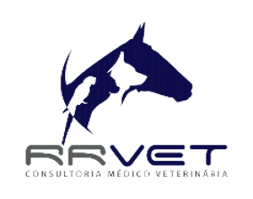

CEPAD
Centro de Proteção
ao Animal Doméstico

Tutor
Nome: {{animalDates.tutor}}
Telefone: {{formatarTelefone(animalDates.telefone)}}
CPF: {{animalDates.cpf}}
Endereço: {{animalDates.rus}}, {{animalDates.numero}} - {{animalDates.bairro}}
Cidade: {{animalDates.cidade}}
CEP: {{animalDates.cep}}
Animal
Animal: {{animalDates.nome}}
RGA: {{animalDates.rga}}
Espécie: {{animalDates.especie}}
Raça: {{animalDates.raca}}
Porte: {{animalDates.porte}}
Idade: {{calcIdade(animalDates.idade)}}
Sexo: {{animalDates.sexo}}
M.V. Responsável: Patrícia Canossa Gagliardi
Tipo de Atendimento: {{atendimentos.atendimento.atd_tipo}}
Suspeitas Diagnósticas:
{{suspeita.dnc_doenca}}
Parâmetros Observados
Peso: {{atendimentos.atendimento.atd_peso}} Kg
Temperatura: {{atendimentos.atendimento.atd_temperatura}} ºC
Mucosas: {{atendimentos.atendimento.atd_mucosas}}
Linfonodos: {{atendimentos.atendimento.atd_linfonodos}}
FC: {{atendimentos.atendimento.atd_fc}} BPM
FR: {{atendimentos.atendimento.atd_fr}} MPM
Sons Respiratórios: {{atendimentos.atendimento.atd_respiracao}}
Sons Cardíacos: {{atendimentos.atendimento.atd_cardiaco}}
Anamnese
Ambiente: {{atendimentos.atendimento.atd_anambiente}}
Ingestão Hídrica: {{atendimentos.atendimento.atd_aningestaoh}}
Alimentação: {{atendimentos.atendimento.atd_analimentacao}}
Suplementação: {{atendimentos.atendimento.atd_ansuplementacao}}
Peso Corporal: {{atendimentos.atendimento.atd_anpeso}}
Vacinação: {{atendimentos.atendimento.atd_anvacinacao}}
Vermifugação: {{atendimentos.atendimento.atd_anvermifugacao}}
Ectoparasiticida: {{atendimentos.atendimento.atd_anectoparasiticida}}
Castração: {{atendimentos.atendimento.atd_ancastracao}}
Diurese: {{atendimentos.atendimento.atd_andiurese}}
Defecção: {{atendimentos.atendimento.atd_andefeccao}}
Parasitos: {{atendimentos.atendimento.atd_anparasitos}}
Prurido: {{atendimentos.atendimento.atd_anprurido}}
Vômito: {{atendimentos.atendimento.atd_anvomito}}
Regurgitação: {{atendimentos.atendimento.atd_anregurgitacao}}
Comportamento: {{atendimentos.atendimento.atd_ancomportamento}}
Sono: {{atendimentos.atendimento.atd_ansono}}
Vocalização: {{atendimentos.atendimento.atd_anvocalizacao}}
Incoordenação: {{atendimentos.atendimento.atd_anincoordenacao}}
Crise Epilética: {{atendimentos.atendimento.atd_anepilepsia}}
Síncope: {{atendimentos.atendimento.atd_ansincope}}
Tosse: {{atendimentos.atendimento.atd_antosse}}
Lambedura: {{atendimentos.atendimento.atd_anlambedura}}
Outras Observações
{{atendimentos.atendimento.atd_outras}}
Exame Físico
Sistema Respiratório: {{atendimentos.atendimento.exf_respiratorio}}
Sistema Cardiovascular: {{atendimentos.atendimento.exf_cardiovascular}}
Sistema Gastrointestinal: {{atendimentos.atendimento.exf_gastroinstetinal}}
Sistema Endócrino: {{atendimentos.atendimento.exf_endocrino}}
Sistema Urinário: {{atendimentos.atendimento.exf_urinario}}
Sistema Reprodutor: {{atendimentos.atendimento.exf_reprodutor}}
Ortopédico: {{atendimentos.atendimento.exf_ortopedico}}
Neurológico: {{atendimentos.atendimento.exf_neurologico}}
Dermatológico: {{atendimentos.atendimento.exf_dermatologico}}
Oftálmico: {{atendimentos.atendimento.exf_oftalmico}}
Ondontológico: {{atendimentos.atendimento.exf_ondontologico}}
Aplicações
Medicação: {{aplicacao.med_nome}}
Apresentação: {{aplicacao.med_apresentacao}}
Concentração: {{aplicacao.med_concentracao}}
Dose: {{aplicacao.apl_dose}}
Via: {{aplicacao.apl_via}}
Procedimentos Realizados
{{procedimento.prc_procedimento}}
Receituário
Medicação: {{receita.med_nome}}
Apresentação: {{receita.med_apresentacao}}
Concentração: {{receita.med_concentracao}}
Dose: {{receita.rec_dose}}
Duração: {{receita.rec_duracao}}
Via: {{receita.rec_via}}
Exames Solicitados
{{exame.exm_exame}}
Encaminhamento Cirúrgico
{{cirurgia.cir_cirurgia}}
(Aguardando Realização)
(Realizada {{formatDateForm(cirurgia.enc_realizacao)}})
Encaminhamentos
{{encaminhamento.ece_especialidade}}